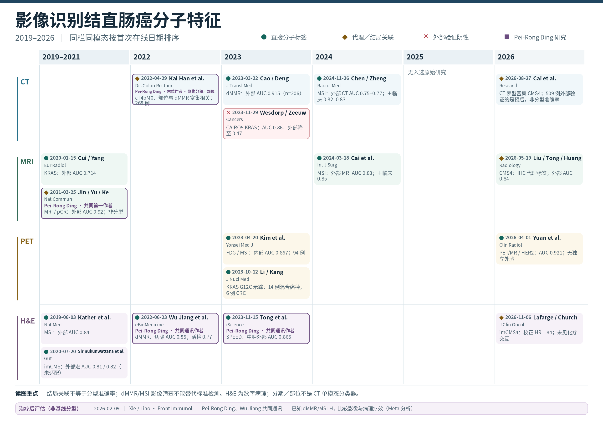
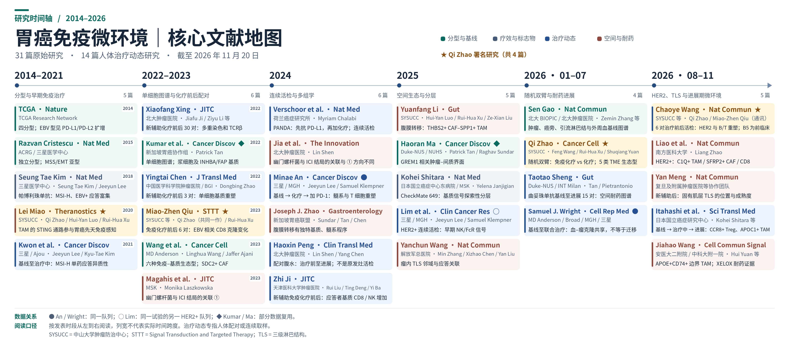
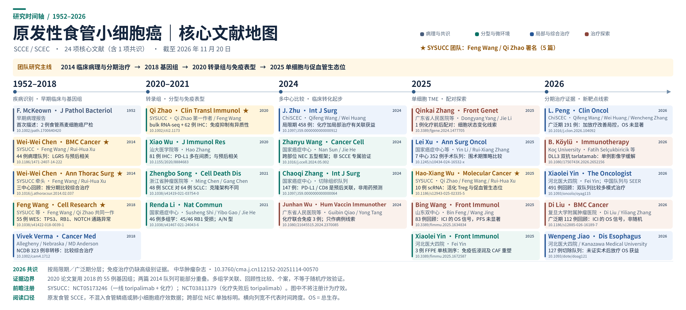
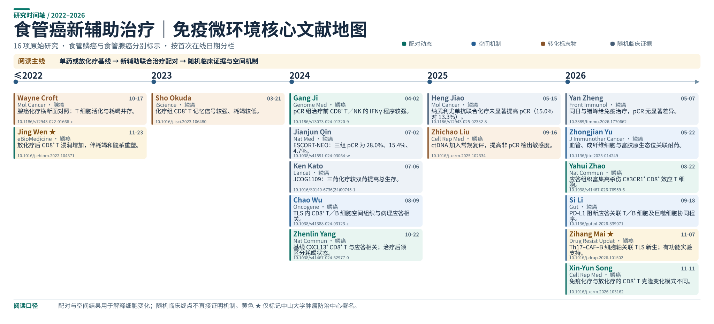

01 / TOPIC
结直肠癌影像分子图谱
CT、MRI、PET 与数字病理：分子标签、代理指标和疗效评估。
按主题浏览公开研究，比较验证结果和证据边界。

CT、MRI、PET 与数字病理：分子标签、代理指标和疗效评估。

从单细胞和空间研究，到免疫治疗应答及耐药。

按时间梳理分子图谱、治疗证据与临床试验。

对照转录组 CMS 与 DNA 层面的分型及其证据边界。

从配对活检和切除样本出发，比较 T 细胞、髓系、基质与 TLS 的重塑，以及预测标志物的证据边界。